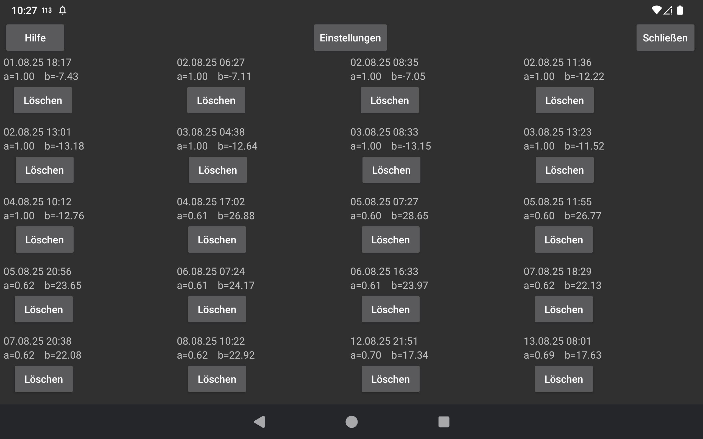

Zeigt die für diesen Sensor durchgeführten Kalibrierungen an. Jede Kalibrierung besteht aus dem Zeitpunkt ihrer Durchführung sowie der Steigung (a) und dem Achsenabschnitt (b) der Beziehung zwischen Blutzucker und Sensorglukose:
Blutzucker = a * SensorGlucose + b
Wenn im linken Menü → Einstellungen → Kalibrierung die Option „Steigung ändern“ nicht eingestellt ist oder wenn zu wenige Fingerstichmessungen vorliegen oder die Fingerstichmessungen nicht ausreichend divergieren, ist a=1. Daher wird nur b bestimmt.
Stream : Zeigt Kalibrierungen von Stream-Werten an. Der Stream ist der Wert, der zum Zeitpunkt der Messung angezeigt wird und für Alarme und Broadcasts verwendet wird.
History : Zeigt Kalibrierungen von History-werten an (nur verfügbar bei Freestyle Libre und CareSens Air). History-werte sind nachträglich geänderte Werte, die in den Apps Librelink und CareSens Air angezeigt werden.
Die Anzeige kalibrierter Kurven kann im mittleren rechten Menü vor „Stream“ und „History“ ein- und ausgeschaltet werden.
Durch Berühren der Kalibrierung gelangen Sie zur Kalibrierungszeit. Durch Berühren von „Löschen“ wird die Kalibrierung gelöscht.
Einstellungen: Anderer Weg, um zum linken Menü -> Einstellungen -> Kalibrierung zu gelangen.